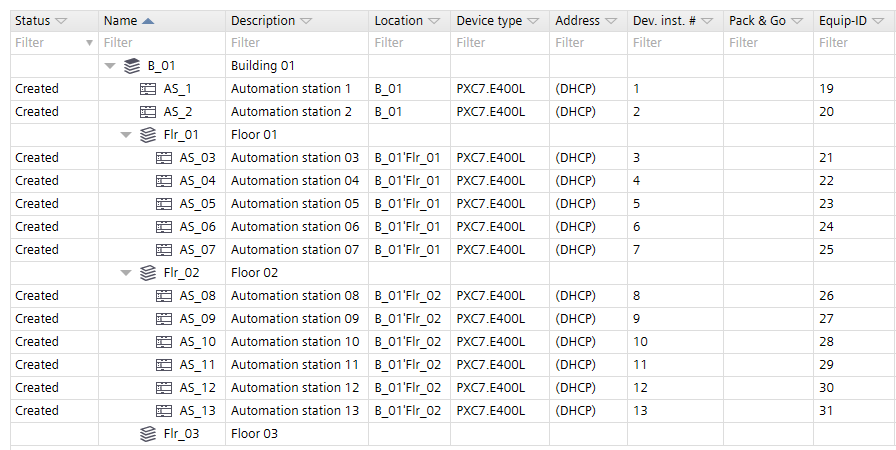
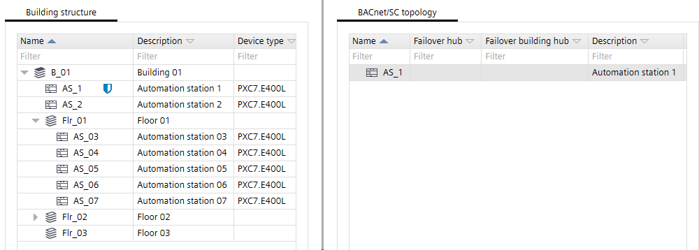
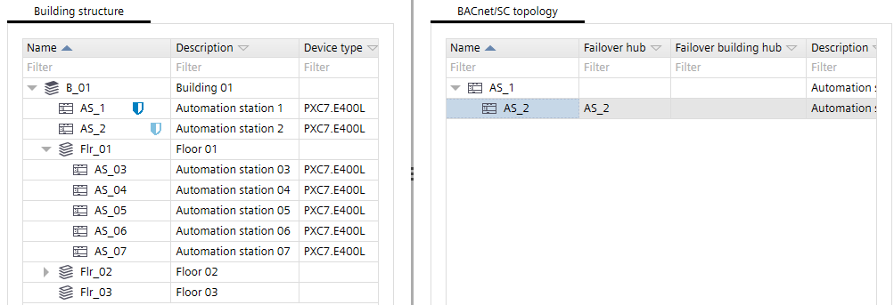
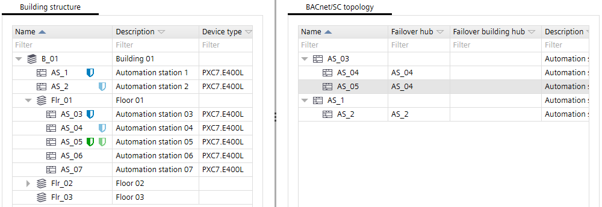
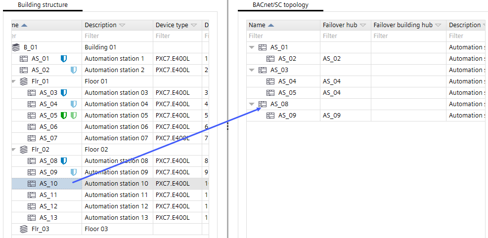
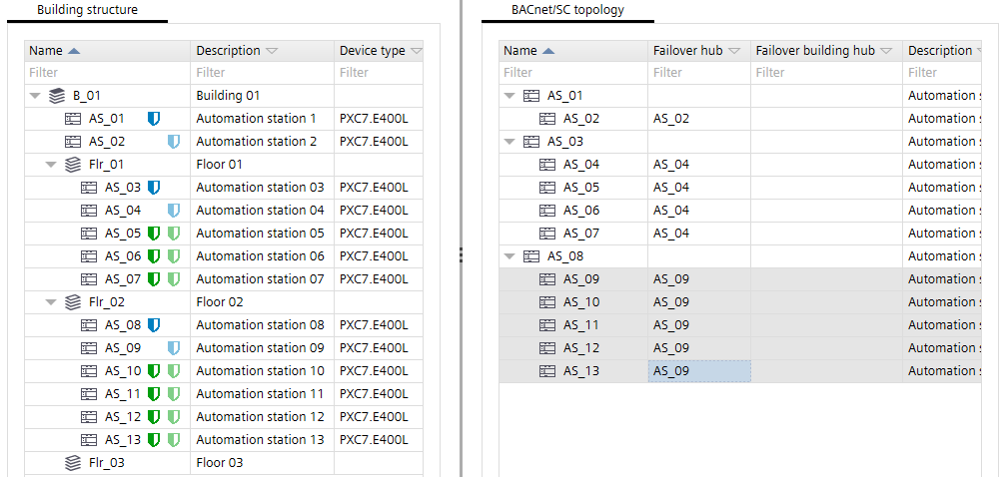
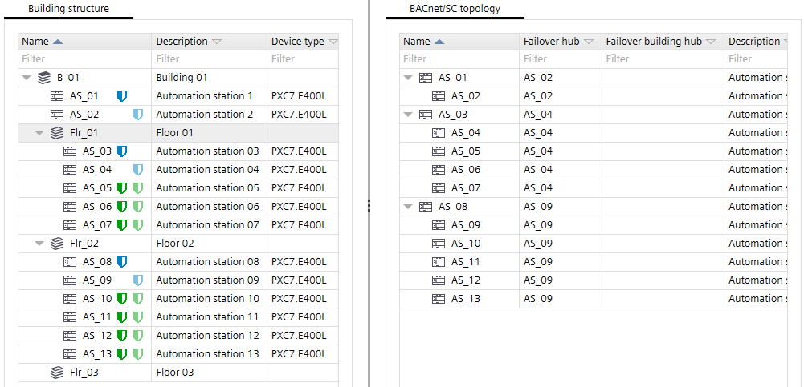
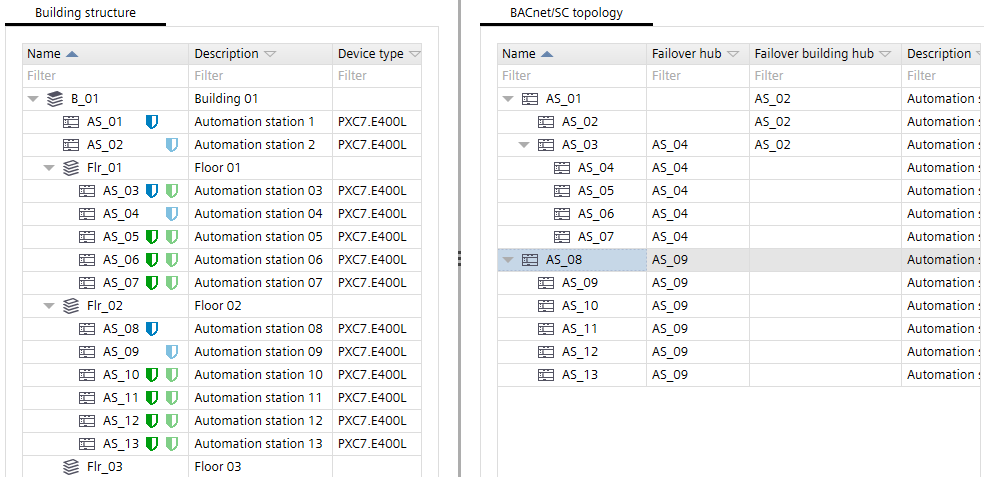
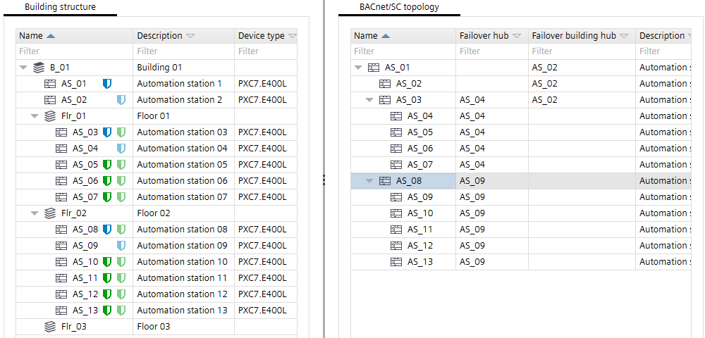

2. Configuring BACnet/SC within ABT Site
1. Create a hub

- The project is available in ABT Site project.
- The used Desigo devices need to be at least device version 1.4.
Note: Device version 1.3 and lower does not support the building hub and the floor hub. However, a flat BACnet/SC structure can always be created with all device versions, down to version 1.2. - Recommendation: The IP network is commissioned and works properly.
- Go to Building.
- Open the BACnet/SC task.
BACnet/SC - If you do not see any devices in the Building structure on the left, open Application & device overview and Check for updates.
Updating device versions - In the Building structure tab, select the device you want to assign as a hub.
- Click Assign hub.
- A hub
 is created.
is created.
Note: PXC4 does not support a hub functionality. - More hubs can be created based on the project requirement.

- A hub is defined and ABT Site can be setup as BACnet/SC as well.
2. Create a failover hub
- One or more hubs are available. Creating a failover hub is optional, but it is recommended to define one.
- In the Building structure tab, select the device you want to assign as a failover hub.
- Right-click and select Properties.
- In the Details pane, select BACnet/SC.
- In the BACnet/SC drop-down list, select Failover hub.
- The device is in an invalid configuration state
 .
. - In the Primary hub drop-down list, select the primary hub.
- The device is now in the valid failover hub state
 .
.
3. Create nodes
Create a single node
- All required hubs and failover hubs are created.
- In the Building structure tab, select the device you want to assign as a node.
- Right-click and select Properties.
- In the Details pane, select BACnet/SC.
- In the BACnet/SC drop-down-list, select Node.
- The device is in an invalid configuration state .
- In the Primary hub drop-down list, select the primary hub.
- It is the valid node with the primary hub state
 .
. - In the Failover hub drop-down list, select the failover hub.
- It is the valid node with the primary hub and failover hub states .
- More nodes can be created based on the project requirement.

Create multiple nodes
- In the Building structure tab, select all the devices you want to assign to a hub.
- Drag the selected nodes to a hub in the BACnet/SC topology tab.

Info: You can use multi-selection. Make sure that you place your mouse pointer on the last selected node when you drag the nodes.
- The nodes are configured and assigned to the hub and failover hub.

4. Create BACnet/SC topology with building- and floor hubs
- Hubs and nodes are defined.
- The BACnet/SC topology tab shows a flat hierarchy.

- In the BACnet/SC topology tab, select a hub, for example, AS_03.
- Drag the AS_03 hub over the AS_01 hub in the BACnet/SC topology tab.
- The AS_01 hub becomes a building hub.
- The AS_03 hub becomes a floor hub.

- In the BACnet/SC topology tab, select the AS_08 hub.
- Drag the AS_08 hub into the BACnet/SC topology tab below the AS_01 building hub.
- This hub becomes a floor hub with the assigned nodes.
- Repeat the assignment for all hubs.
- All hubs are assigned to the building hub.

5. Modify the BACnet/SC network number for each hub network
- All devices are assigned to their respective floor hub.
- Select a floor hub.
- In the SC network column, select the corresponding cell.
- Add a new unique BACnet/SC network number.
- Click Enter.
- All assigned nodes below this floor hub get the same BACnet/SC network number.
- Repeat the steps for all floor hubs.